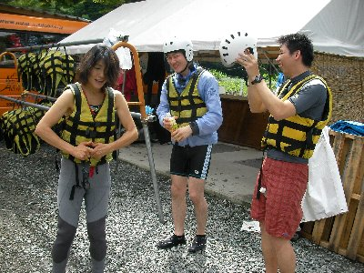
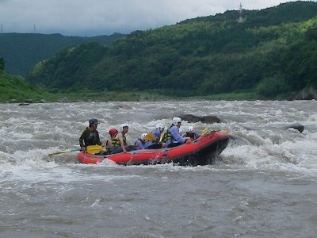
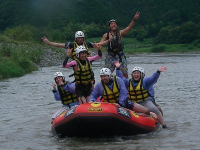
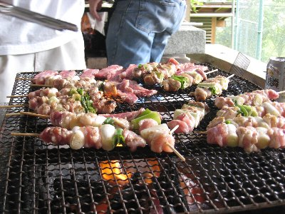

富士川ラフティング | 2010年7月 幹事：いづみ |
|---|---|
|  |  |
| 今年もやってきました、水浴びの季節！ ラフティングの季節です！ 6月から降り続く雨。一向に梅雨明けの気配はなく、予定日が近づいても雨、雨。 でも、ラフティングだとちょっと嬉しい♪ 水量が増えて面白くさせてくれ！って思っちゃう。アウトドアやっていて、天気悪くて喜ぶイベント、他にないよね。 当日。出発するときは曇りなれど、雨は降ってない。良い感じです。 今年もお世話になる「ナチュラルアクション」に到着すると・・・・あれれ、以外に人が多いけど・・・子供も沢山・・ご高齢の方も・・・もしかして参加者ですか？ なんて思っていたら、本当に参加する方々でした。どこかが主催した「芝川を体験する」みたいなイベントの一環らしいです。 | |
 |  |
| ラフティングの説明受けて、着替えて、バスに乗り出発です。 残念なことに、通常コースで始めに現れる”釜場”は、今回回避です。釜場下からスタートして、通常よりロングランコースみたいだけど、釜場無いとちょっと残念。 水量が多いから避けたってわけではなくて、どうやら参加者の顔ぶれをみたようですね。確かに小学生や、高齢者が主のメンツでは、インストラクターもやりきれないでしょうから。 他社のボートが通って来ましたからね。出来るんですが・・あのカフェオレ色の釜場を・・・ まあ、気を取り直して出発！ なんだかんだ言っても水量が多いのには変わりはなく、ドウドウと流れる、カフェオレ色の濁流一歩手前です。 流れも通常よりは早いみたいです。川幅も広いかな〜 | |
|  |  |
| さあ、ガンガン行こう！ 艇は全部で9艇。ウチのグループで3艇使ってます。 水量が多いためか、瀬でのアップダウンが激しく、それなりに楽しめます！ 危険とか落ちそうとかは感じなかったけどね。 水もかぶり、熱くなってきた日差しに心地よい。途中で岩から飛び込むポイントもクリアー。この高さが気持ちいい〜 何箇所か瀬をクリアーして、通常より下流で終了。いや、楽しめました♪ 釜場回避は残念だったけど、ちょっとロングコースと行ったことがない瀬は、新鮮で良いですね。 大勢でバシャバシャと水遊びも、楽しかった。初めて参加してくれた方々も、楽しんでくれたようで良かったです♪ ラフィティング後は、恒例になってきたバーベキュー。去年と同様にユートリオにお世話になりました。 遊んだ後の焼き肉美味いな〜 ビール沢山持ってくればよかった。 お腹も一杯になって夕方解散。いや〜、一日めー一杯遊びました。 | |
 |  |
| 写真：べっしー＆ナチュラルアクション、コメント：べっしー | |